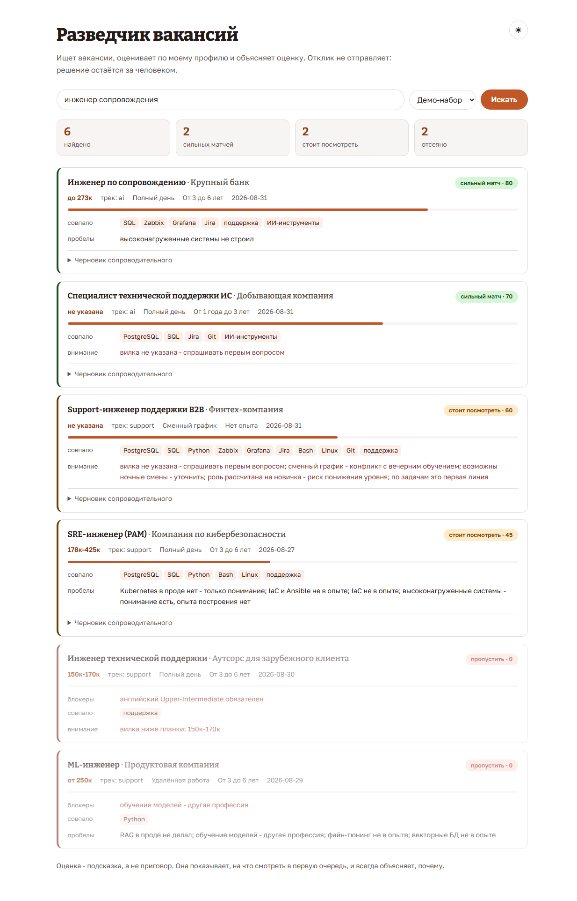
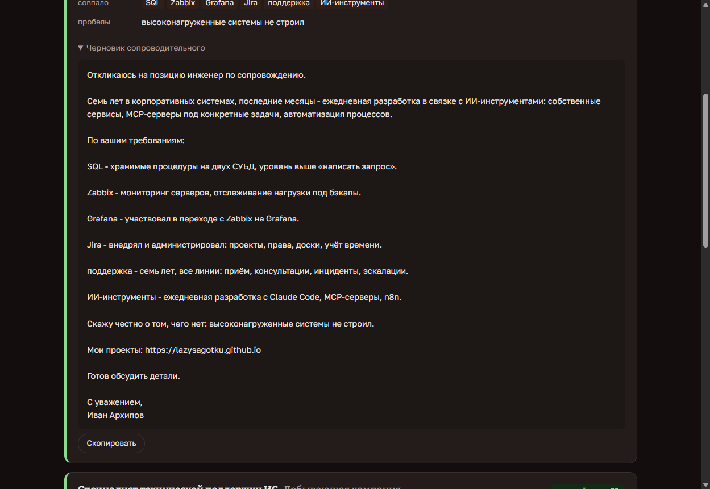

Как это выглядит


Скриншоты кликабельны. На них демо-набор: реальный пайплайн откликов остаётся личным.
Чего он намеренно не делает
Не отправляет отклики
Технически это несложно. Но отклик уходит от моего имени реальному работодателю и он необратим: повторно откликнуться на ту же вакансию нельзя.
Цена ошибки несимметрична. Выигрыш измеряется сэкономленными минутами, проигрыш - сожжённой вакансией. Поэтому инструмент доводит до момента «прочитай и реши», а решение остаётся за человеком.
Это же правило определило и всё остальное в проекте: он не пытается быть умнее, чем может, и везде показывает, на основании чего сделал вывод.
Как устроена оценка
Навык несёт своё подтверждение
Не «знаю PostgreSQL», а «хранимые процедуры, оптимизация запросов, замена легаси-процедур». Одна и та же формулировка попадает и в объяснение оценки, и в черновик письма.
Пробелы снижают, но не отсеивают
Kubernetes в проде, IaC, векторные базы - встретилось в вакансии, значит балл честно уменьшается, и это же попадает в письмо отдельным абзацем.
Блокеры отсеивают сразу
Английский B2 при полной коммуникации на нём, реверс-инжиниринг, обучение моделей. Это не пробел на вечер, а другая профессия - и лучше увидеть это до того, как потратишь час на письмо.
Условия важны не меньше стека
Вилка ниже планки, сменный график с ночами, роль «обучим с нуля» при семи годах опыта - всё это снижает оценку, даже когда технологии совпадают полностью.
Профиль вынесен в отдельный модуль и ничего не знает о скоринге, а скоринг ничего не знает о кандидате. Меняется опыт - правится один файл.